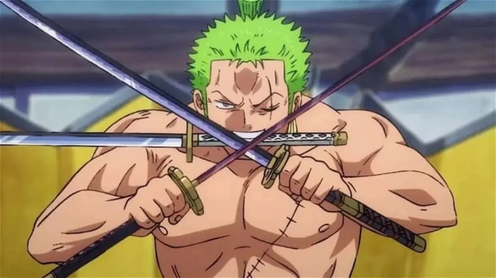

Ronronoa Zoro
 |
"Cazador de Piratas"Fue el primer miembro en unirse a Luffy como tripulante, convirtiéndose en el espadachín de la tripulación. Su sueño es llegar a ser el mejor espadachín del mundo. |
|  | Es un experto espadachín; capaz de usar estilos de 1, 2, 3 y 9 espadas en una amplia variedad de estilos de ataque, aunque es más talentoso en el estilo de 3 espadas, pelea usando tres espadas, llevando una en cada mano y otra en la boca. Su ataque más poderoso lo realiza con una sola espada, reservando el estilo de 2 espadas para ciertos ataques especiales. Su recompensa es de 1.111.000.000. |